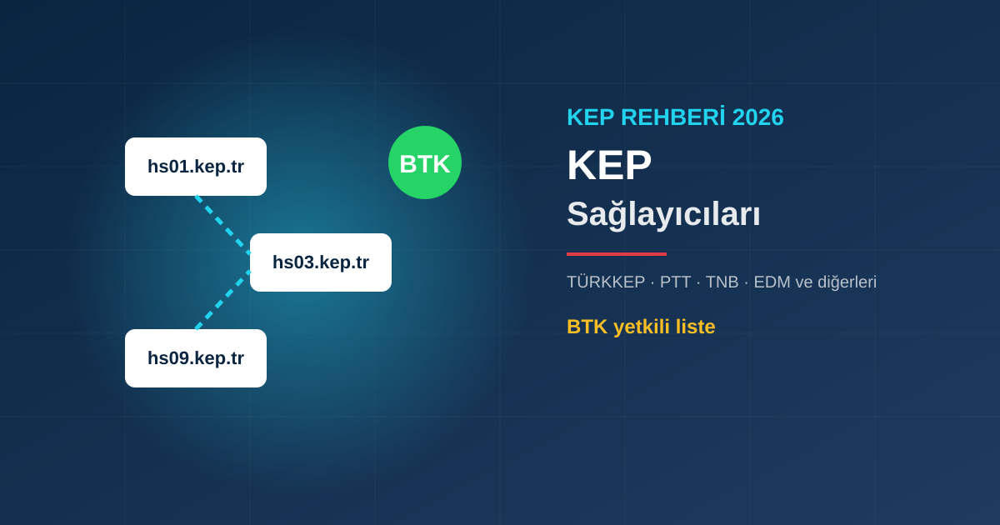

KEP Sağlayıcıları: TÜRKKEP, PTT KEP, EDM KEP ve Diğerleri
BTK'nın yetkilendirdiği KEP hizmet sağlayıcıları listesi: PTT, TNB, TÜRKKEP, QNB eSolutions, KEPKUR, F.I.T., EDM ve Ark Dijital. Farkları, adres uzantıları ve seçim kriterleri.
U
UMAY TÜM BİLİŞİM Editör Ekibi
Yayınlanma: 8 Ekim 2026 · Güncelleme: 8 Ekim 2026

KEP Hizmet Sağlayıcısı (KEPHS) Nedir?
KEP hesabı, e-posta gibi herhangi bir firmadan açılamaz. Yalnızca Bilgi Teknolojileri ve İletişim Kurumu (BTK) tarafından yetkilendirilmiş Kayıtlı Elektronik Posta Hizmet Sağlayıcıları (KEPHS) KEP hesabı açabilir. Bu sağlayıcılar gönderim ve teslim kayıtlarını hukuken delil olacak şekilde tutar.
BTK Yetkili KEP Sağlayıcıları Listesi (Ekim 2026)
BTK'nın resmi listesindeki sağlayıcılar ve KEP adresi uzantıları:
Sağlayıcı
Adres uzantısı
Faaliyete başlama
Durum
PTT (Posta ve Telgraf Teşkilatı A.Ş.)
hs01.kep.tr
2012
Faaliyette
TNB Bilişim
hs02.kep.tr
2012
Faaliyette
TÜRKKEP
hs03.kep.tr
2013
Faaliyette
Intertech
hs04.kep.tr
2014
Faaliyete son verdi (2023)
QNB eSolutions
hs05.kep.tr
2015
Faaliyette
KEPKUR
hs06.kep.tr
2015
Faaliyette
F.I.T. Bilgi İşlem
hs07.kep.tr
2015
Faaliyette
Mikro Yazılımevi
hs08.kep.tr
2016
Faaliyete son verdi (2022)
EDM Bilişim (EDM KEP)
hs09.kep.tr
2022
Faaliyette
Ark Dijital
hs10.kep.tr
2026
Faaliyette
Liste zaman zaman değişir; en güncel hali için BTK'nın sayfasına bakabilirsiniz.
Sık Aranan Sağlayıcılar Kısaca
PTT KEP: Posta ve Telgraf Teşkilatı'nın KEP hizmetidir; ilk yetkilendirilen sağlayıcıdır (hs01). PTT ayrıca kanuni elektronik tebligatların yapıldığı UETS sistemini de işletir; ikisi farklı hizmetlerdir.
TÜRKKEP: 2013'ten beri faaliyette olan özel KEP sağlayıcısıdır (hs03). "TÜRKKEP'ten mesaj geldi" diye arama yapanlar genellikle kendilerine KEP üzerinden bir bildirim ulaştığını görür.
TNB KEP: Türkiye Noterler Birliği iştiraki TNB Bilişim tarafından sunulur (hs02).
EDM KEP: EDM Bilişim'in 2022'de faaliyete başlayan KEP hizmetidir (hs09).
Hukuki Geçerlilik Fark Eder mi?
Hayır. Tüm yetkili sağlayıcılar aynı mevzuata tabidir. TTK 18/3 kapsamındaki ihtarlar veya kurumlarla yazışmalar için hangi sağlayıcıdan aldığınızın hukuki bir önemi yoktur; farklı sağlayıcılardaki KEP adresleri birbirine yazışabilir.
Sağlayıcı Seçerken Nelere Bakmalı?
Fiyat ve paket yapısı: Yıllık ücret, ileti adedi ve depolama kotası sağlayıcıya göre değişir.
Kullanım kolaylığı: Web paneli, mobil uygulama ve bildirim seçenekleri.
Entegrasyon: Muhasebe veya belge yönetim yazılımınızla bağlantı imkanı.
Saklama süresi: Gönderilen ve alınan iletilerin ne kadar süre arşivlendiği.
Destek: Kurulum, e-imza ile giriş ve sorun anında ulaşılabilirlik.
KEP hesabına giriş ve ileti göndermek için çoğunlukla nitelikli e-imza kullanılır. Bu yüzden KEP ve e-imzayı birlikte planlamak işinizi kolaylaştırır.
Sağlayıcı Değiştirmek Mümkün mü?
Evet, istediğiniz zaman başka bir yetkili sağlayıcıdan yeni KEP hesabı açabilirsiniz. Ancak adres uzantısı sağlayıcıya özel olduğu için KEP adresiniz değişir. Yeni adresinizi yazıştığınız kurumlara, müşterilerinize ve ilgili kayıtlara bildirmeyi unutmayın. KEP zorunluluğunun kimleri kapsadığını KEP Adresi Kimlere Zorunlu? yazımızda anlattık.
Sık Sorulan Sorular
BTK'nın listesine göre Ekim 2026 itibarıyla faaliyette olan KEP hizmet sağlayıcıları PTT, TNB Bilişim, TÜRKKEP, QNB eSolutions, KEPKUR, F.I.T. Bilgi İşlem, EDM Bilişim ve Ark Dijital'dir. Intertech ve Mikro Yazılımevi faaliyetlerine son vermiştir.
TÜRKKEP Kayıtlı Elektronik Posta Hizmet Sağlayıcılığı ve Ticaret A.Ş., BTK tarafından yetkilendirilmiş bir KEP hizmet sağlayıcısıdır. 2013'ten beri faaliyettedir ve adres uzantısı hs03.kep.tr'dir.
Hayır. BTK yetkili tüm KEP sağlayıcılarından alınan KEP hesapları aynı mevzuata tabidir ve aynı hukuki geçerliliğe sahiptir. Farklar fiyat, panel, depolama, entegrasyon ve destek gibi hizmet özelliklerindedir.
Evet, başka bir yetkili sağlayıcıdan yeni hesap açabilirsiniz. Ancak adresinizin uzantısı değişeceği için yeni KEP adresinizi yazıştığınız kurumlara ve ilgili sicillere bildirmeniz gerekir.
U
UMAY TÜM BİLİŞİM Editör Ekibi
AYYILDIZ İMZA BİLGİ GÜVENLİĞİ VE TEKNOLOJİLERİ A.Ş. bayisi olarak 5+ yıllık sektörel deneyime sahip, BTK mevzuatı, 5070 sayılı Elektronik İmza Kanunu ve 6102 sayılı TTK üzerinde uzmanlaşmış uzmanlardan oluşan editör ekibimiz. Tüm içerikler güncel mevzuat ve uygulamaya uygunluk açısından gözden geçirilir.
✓ AYYILDIZ İMZA Bayisi✓ 5+ Yıl Deneyim✓ 81 İl Hizmet
📚 Bu Makalede Kullanılan Kaynaklar ve Yasal Dayanaklar
Tüm kaynaklar resmi devlet kurumları veya ilgili düzenleyici otoritelerin yayınladığı belgeler ile birinci derece kaynak şirketlerin web sitelerinden alınmıştır.
🔄 Bu içerik en son 8 Ekim 2026 tarihinde gözden geçirildi ve güncel mevzuata uygunluğu teyit edildi.